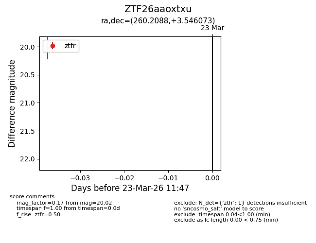
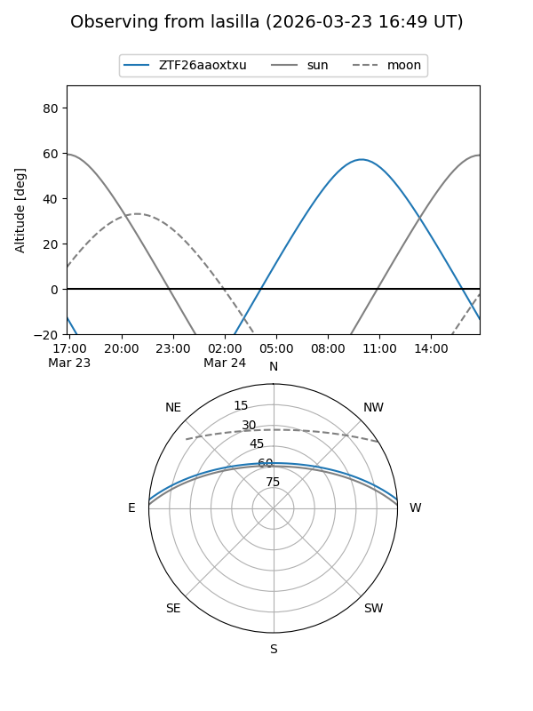
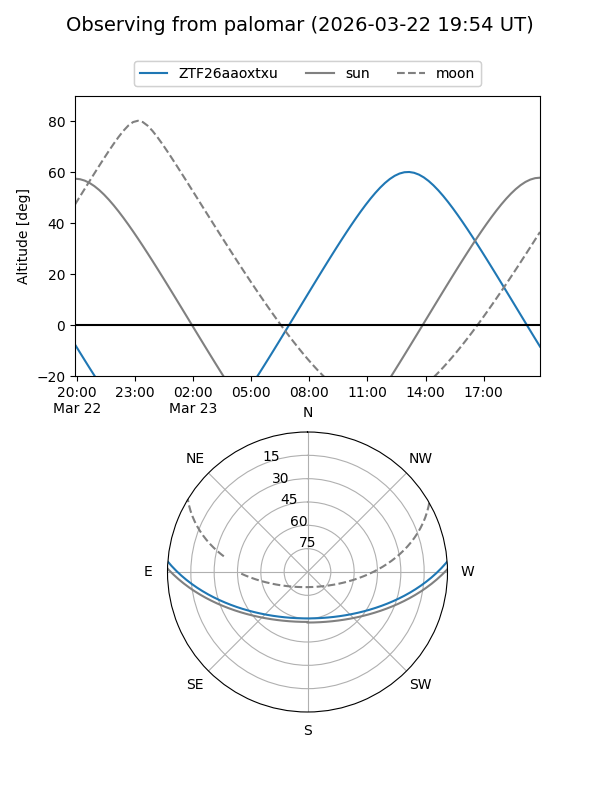
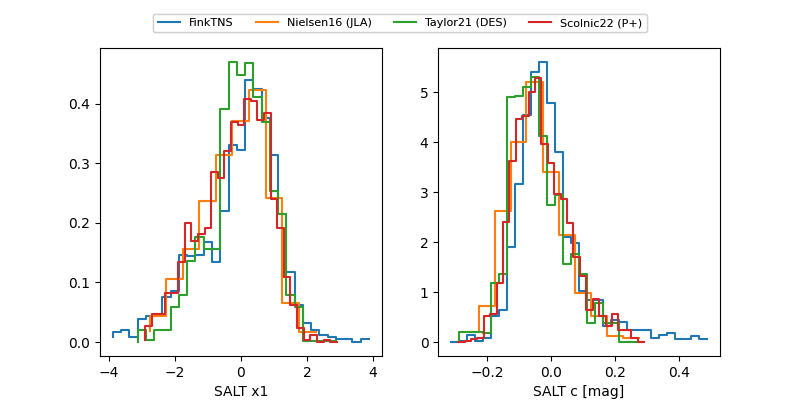

ZTF26aaoxtxu
Target ZTF26aaoxtxu at 2026-03-23 11:49
Aliases and brokers:
FINK: link
Lasair: link
ALeRCE: link
alt names
ZTF26aaoxtxu (ztf,fink_ztf)
Coordinates:
equatorial (ra, dec) = 260.2088,+3.54607
equatorial (HMS+DMS) = 17:20:50.12,+03:32:45.86
galactic (l, b) = (25.4958,+21.73360)
Flags:
Photometry:
last ztfr=20.02
1 ztfr detections
Lightcurve

Visibility


Additional plots
